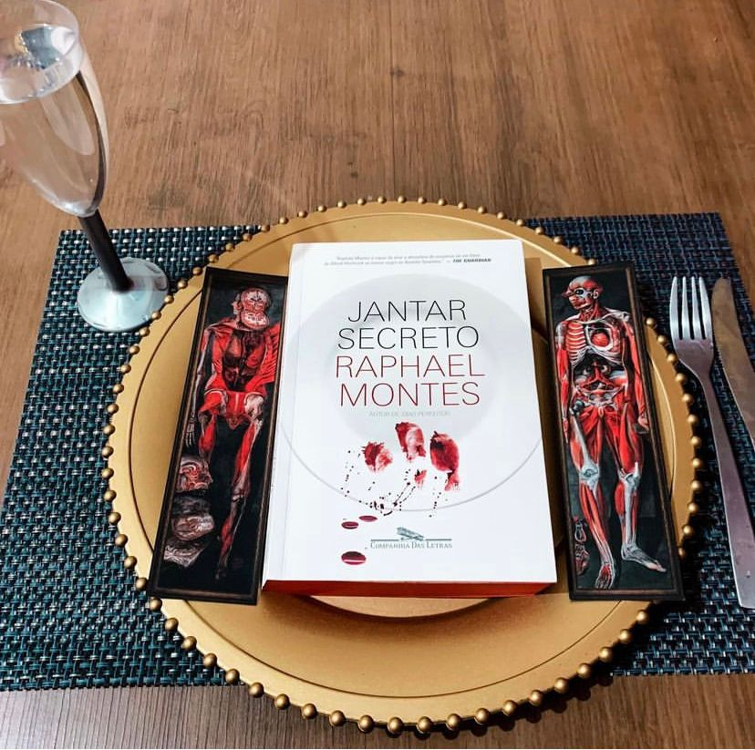

Jantar Secreto
(Raphael Montes -Companhia das Letras)
⭐⭐⭐⭐⭐
⚠️Gatilhos: Assassinato, Violência e Canibalismo.
Que livro! Conheci a escrita do autor através da sua obra em parceria com Ilana Casoy - Bom Dia, Verônica, e adorei o estilo narrativo. Depois de ver muitos comentários sobre Jantar Secreto cedi a curiosidade e valeu a pena!
Um grupo de jovens deixa uma pequena cidade no Paraná para viver no Rio de Janeiro. Eles alugam um apartamento em Copacabana e fazem o possível para pagar a faculdade e manter vivos seus sonhos de sucesso na capital fluminense. Mas o dinheiro está curto e o aluguel está vencido. Para sair do buraco e manter o apartamento, os amigos adotam uma estratégia heterodoxa: arrecadar fundos por meio de jantares secretos, divulgados pela internet para uma clientela exclusiva da elite carioca. A partir daí, eles se envolvem em uma espiral de crimes, descobrem uma rede de contrabando de corpos, matadouros clandestinos e grã-finos excêntricos, e levam ao limite uma índole perversa que jamais imaginaram existir em cada um deles.
O livro é narrado por Dante(posso garantir que o nome não foi escolhido em vão)e vai mostrar a real dificuldade de morar em comunidade. Mas, o foco principal aqui é questionar: “Até onde vai os seus princípios ?” e o livro vai fazer você refletir sobre: sua moral, seus princípios e tudo aquilo que você defende. É bom avisar aos leitores que existe cenas gore com direito a canibalismo e muita carnificina por isso se você é sensível a narrativas extremamente descritivas não leia.
Após ter um surto atrás do outro durante a leitura me senti imersa durante todo processo e a obra tem um plot chocante.
Agora. se você gosta de temas pesados e intensos vale a pena! Próxima meta: Finalizar uma mulher no escuro.